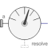
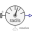
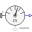

PartialAbsoluteBaseSensorBase class for absolute sensor models defined by equations (frame_resolve must be connected exactly once) |

|
Information
This information is part of the Modelica Standard Library maintained by the Modelica Association.
Partial base class for absolute sensor models defined by equations. The connector frame_resolve is always enabled and must be connected exactly once.
Connectors (2)
| frame_a |
Type: Frame_a Description: Coordinate system from which kinematic quantities are measured |
|
|---|---|---|
|  | frame_resolve |
Type: Frame_resolve Description: Coordinate system in which output vector(s) is optionally resolved |
Extended by (2)
|  |
Modelica.Mechanics.MultiBody.Sensors.Internal Basic sensor to measure absolute angular velocity |
|  |
Modelica.Mechanics.MultiBody.Sensors.Internal Basic sensor to measure absolute position vector |